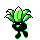
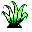

#043
Oddish
GrassPoison
During the day, it keeps its face buried in the ground. At night, it wanders around sowing its seeds
Base stats Total 255
HP45
Attack50
Defense55
Speed30
Special75
Evolution
Pokédex data
- Species
- Weed Pokémon
- Height
- 1'08"
- Weight
- 12.0 lb
- Catch rate
- 255 / 255
- Base experience
- 78
- Growth rate
- Medium Slow
Level-up moves 8
LevelMoveTypePowerAcc.PP
TM / HM moves 15
TM / HMMoveTypePowerAcc.PP